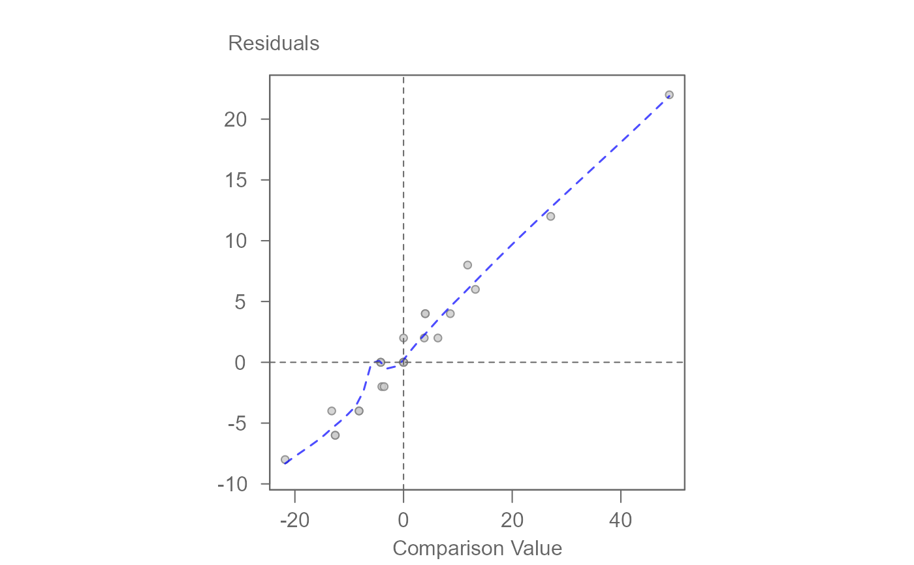
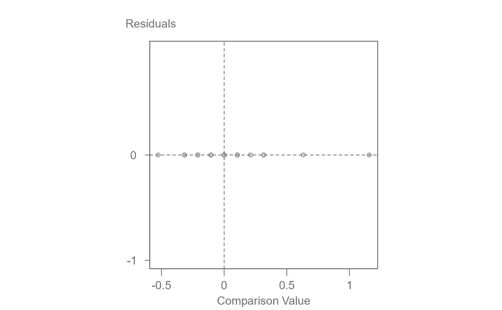

Table 4-25 of Exploring Data tables, Trends, and Shapes is a synthetic dataset of a three-way table. The key characteristic of this data is that if one takes the square root of each value in the table, the resulting values would perfectly fit a simple additive model. This means that, in the square root scale, there are no interaction effects between the factors.
Usage
data(edtts4.25)Format
A data frame with the following variables:
- A
Effect A
- B
Effect B
- C
Effect C
- Value
Response variable
Details
The data is constructed using specific values
grand mean: \(\mu = 20\)
factor A: \((\alpha_1, \alpha_2, \alpha_3) = (-1, 0, 3)\)
factor B: \((\beta_1, \beta_2, \beta_3) = (-1, 0, 1)\)
factor C: \((\gamma_1, \gamma_2, \gamma_3) = (-1, 0, 2)\)
References
Hoaglin, David C. and Mosteller, Frederick and Tukey, John W. (1985). Exploring data tables, trends, and shapes. Wiley.
Examples
# Median polish of raw values
M0 <- eda_npol(edtts4.25, Value, A, B, C)
# There is evidence of strong interaction as shown in this plot
plot(M0, plot = "diagnostic")

# Taking the square root eliminates interaction effects
# Note that this may throw a warning if loess option is
# set to TRUE
M1 <- eda_npol(edtts4.25, Value, A, B, C, p = 0.5)
plot(M1, plot = "diagnostic", loe = FALSE)
